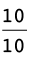
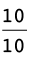
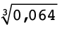
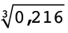
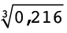
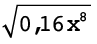
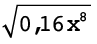

4 The decimal notation for fractions
4.1 Equivalent forms
Decimal fractions and common fractions are simply different ways of expressing the same number. They are different notations showing the same value.
Notation means a set of symbols to show a special thing.
To write a decimal fraction as a common fraction:
To write a common fraction as a decimal fraction:
Common fractions, decimal fractions and percentages
You are not permitted to use a calculator in this exercise.
1. Write the following decimal fractions as common fractions in their simplest form:
(a) 0,56 (b) 3,87
=
 =
=  \times
\times  =
= 
=

(c) 1,9 (d) 5,205
=
or 1 
=
 =
=  \times
\times  =
=  or 5
or 5 
2. Write the following common fractions as decimal fractions:
(a)  (b)
(b) 
=
 \times
\times  =
=  = 0,45
= 0,45
=
 \times
\times  =
=  = 1,4
= 1,4
(c)  (d) 2
(d) 2 
=
 \times
\times  =
=  = 0,96
= 0,96
=
 \times
\times  =
=  = 2,375
= 2,375
3. Write the following percentages as common fractions in their simplest form:
(a) 70% (b) 5% (c) 12,5%
=
 =
= 
=
 =
= 
=
 =
=
4. Write the following decimal fractions as percentages:
(a) 0,6 (b) 0,43 (c) 0,08
=
 \times
\times  =
=  = 60%
= 60%
=
 = 43%
= 43%
=
 = 8%
= 8%
(d) 0,265 (e) 0,005
=
 = = 26,5%
= = 26,5%
=
=  = 0,5%
= 0,5%
5. Write the following common fractions as percentages:
(a)  (b)
(b)  (c)
(c) 
=
 \times
\times  =
=  = 70%
= 70%
=
 \times
\times  =
=  = 75%
= 75%
=
 \times
\times  =
=  = 66%
= 66%
(d)  (e)
(e)  (f)
(f) 
= 100%
=
 \times
\times  =
=  = 8%
= 8%
=
 \times
\times  =
=  = 58%
= 58%
6. Jane and Devi are in different schools. At Jane's school the year mark for Mathematics was out of 80, and Jane got 60 out of 80. At Devi's school the year mark was out of 50 and Devi got 40 out of 50.
(a) What fraction of the total marks, in simplest form, did Devi obtain at her school?
 =
= 
(b) What percentage did Devi and Jane get for Mathematics?
Devi:
80% Jane:  =
=  \times
\times  =
=  = 75%
= 75%
(c) Who performed better, Jane or Devi?
7. During a basketball game, Lebo tried to score twelve times. Only four of her attempts were successful.
(a) What fraction of her attempts was successful?
 =
= 
(b) What percentage of her attempts was not successful?
 =
=  = 66,6…%
= 66,6…%

4.2 Calculations with decimals
When you add and subtract decimal fractions:
Add tenths to tenths.
Subtract tenths from tenths.
Add hundredths to hundredths.
Subtract hundreds from hundredths.
And so on!
When you multiply decimal fractions, you change the decimals to whole numbers, do the calculation and last, change them back to decimal fractions.
For example: To calculate 13,1 \times 1,01, you first calculate 131 \times 101 (which equals 13 231). Then, since you have multiplied the 13,1 by 10, and the 1,01 by 100 in order to turn them into whole numbers, you need to divide this answer by 10 \times 100 (i.e. 1 000). Thus, the final answer is 13,231
When you divide decimal fractions, you can use equivalent fractions to help you.
For example: 21,7
\div 0,7 =  =
=  \times  = = 31
\times  = = 31
Notice how you multiply both the numerator and denominator of the fraction by the same number (in this case, 10). Always multiply by the smallest power of ten that will convert both values to whole numbers.
CALCULATIONS WITH DECIMALS
You are not permitted to use a calculator in this exercise. Ensure that you show all steps of your working.
1. Calculate the value of the following:
(a) 3,3 + 4,83 (b) 0,6 + 18,3 + 4,4
(c) 9,3 + 7,6 - 1,23 (d) (16,0 - 7,6) - 0,6
(e) 9,43 - (3,61 + 1,14) (f) 1,21 + 2,5 - (2,3 - 0,23)
2. Calculate the value of the following:
(a) 4 \times 0,5 (b) 15 \times 0,02 (c) 0,8 \times 0,04
(d) 0,02 \times 0,15 (e) 1,07 \times 0,2 (f) 0,016 \times 0,02
3. Calculate the value of the following:
(a) 7,2 \div 3 (b) 12 \div 0,3 (c) 0,15 \div 0,5
= 2,4
=
 \times
\times 
=
 \times
\times 
= 0,3
(d) 10 \div 0,002 (e) 0,3 \div 0,006 (f) 0,024 \div 0,08
= 2,4 \div 8
= 0,3
4. Circle the value that is equal to or closest to the answer to each calculation:
(a) 3 \times 0,5 (b) 4,4 \div 0,2
A: 6 A: 8,8
B: 1,5 B: 2,2
C: 0,15 C: 22
(c) 56 \times 1,675
A: more than 56
B: more than 84
C: more than 112
5. Determine the operator and the unknown numbers in the following diagram, and fill them in:

6. Calculate the following:
(a) (0,1)2 (b) (0,03)2 (c) (2,5)2
(d)  (e)
(e)  (f)
(f) 
(g) (0,2)3 (h) (0,4)3 (i) (0,03)3
(j)  (k)  (l) 
(l) 
7. Calculate the following:
(a) 2,5 \times 2 \div 10 (b) 4,2 - 5 \times 1,2
(c)  (d) 4,2 \div 0,21 + 0,45 \times 0,3
(d) 4,2 \div 0,21 + 0,45 \times 0,3
=
\times 
= 420 \div 21 + 0,135

4.3 Solving problems
All kinds of problems
You are not permitted to use a calculator in this exercise. Ensure that you show all steps of working.
1. Is 6,54 \times 0,81 = 0,654 \times 8,1? Explain your answer.
2. You are given that 45 \times 24 = 1 080. Use this result to determine:
(a) 4,5 \times 2,4 (b) 4,5 \times 24 (c) 4,5 \times 0,24
(d) 0,045 \times 24 (e) 0,045 \times 0,024 (f) 0,045 \times 24
3. Without actually dividing, choose which answer in brackets is the correct answer, or the closest to the correct answer
(a) 14 \div 0,5 (7; 28; 70) (b) 0,58 \div 0,7 (8; 80; 0,8)
(c) 2,1 \div 0,023 (10; 100; 5)
4. (a) John is asked to calculate 6,5 \div 0,02. He does the following:
Step 1: 6,5 \div 2 = 3,25
Step 2: 3,25 \times 100 = 325
Is he correct? Why?
\times = 650 \div 2 = 325
(b) Use John's method in part (a) to calculate:
(i) 4,8 \div 0,3 (ii) 21 \div 0,003
5. Given: 0,174 \div 0,3 = 0,58. Using this fact, write down the answers for the following without doing any further calculations:
(a) 0,3 \times 0,58 (b) 1,74 \div 3
(c) 17,4 \div 30 (d) 174 \div 300
(e) 0,0174 \div 0,03 (f) 0,3 \times 5,8
4.4 More problems
More problems and calculations
You may use a calculator for this exercise.
1. Calculate the following, rounding off all answers correct to 2 decimal places:
(a) 8,567 + 3,0456 (b) 2,781 - 6,0049
(c) 1,234 \times 4,056 (d) 
2. What is the difference between 0,890 and 0,581?
3. If a rectangle is 12,34 cm wide and 31,67 cm long.
(a) What is the perimeter of the rectangle?
(b) What is the area of the rectangle? Round off your answer to two decimal places.
4. Alison buys a cooldrink for R5,95, a chocolate for R3,25 and a packet of chips for R4,60. She pays with a R20 note.
(a) How much did she spend?
(b) How much change did she get?
5. A tractor uses 11,25 â„“ of fuel in 0,75 hours. How many litres does it use in one hour?
6. Mrs Ruka received her municipal bill.
(a) Her water consumption charge for one month is R32,65. The first 5,326 kâ„“ are free, then she pays R5,83 per kilolitre for every kilolitre thereafter.
How much water did the Ruka household use?
(b) The electricity charge for Mrs Ruka for the same month was R417,59. The first 10 kWh are free. For the next 100 kWh the charge is R1,13 per kWh, and thereafter for each kWh the charge is R1,42.
How much electricity did the Ruka household use?
7. A roll of material is 25 m long. To make one dress, you need 1,35 m of material. How many dresses can be made out of a roll of material and how much material is left over?
8. If 1 litre of petrol weighs 0,679 kg, what will 28,6 â„“ of petrol weigh?
9. The reading on a water meter at the beginning of the month is 321,573 kâ„“. At the end of the month the reading is 332,523 kâ„“. How much water was used during this month, in â„“?
4.5 Decimals in algebraic expressions and equations
DECIMALS IN ALGEBRA
1. Simplify the following:
(a)  (b) 7,2x3 -
10,4x3
(b) 7,2x3 -
10,4x3
= 0,3x18
= -3,2x3
(c) (2,4x2y3)(10y3x) (d) 11,75x2 - 1,2x \times 5x
= 24x3y6
= 11,75x2 - 6x2
= 5,75x2
(e)  (f)
(f)  + 
+ 
=

= 0,2x4 + 0,4x4
=

= 0,6x4
(g) 3x2 + 0,1x2 - 45,6 +
3,9 (h) 
= 3,1x2 - 41,7
=

=

2. Simplify the following:
(a)  (b)
(b)  -
- 
=
 \times
\times 
=

= = 25x6
(c)  \times
\times  (d)
(d)  \div
\div
=
\times 
=
 \times
\times
=

=

=

=

3. Solve the following equations:
(a) 0,24 + x = 0,31 (b) x + 5,61 = 7,23
(c) x - 3,14 = 9,87 (d) 4,21 - x = 2,74
(e) 0,96x = 0,48 (f) x \div 0,03 = 1,5

You are not permitted to use a calculator in this exercise, except for question 5. Ensure that you show all steps of working, where relevant.
1. Complete the following table:
|
Percentage |
Common fraction |
Decimal fraction |
|
2,5% |
||
|
|
||
|
|
0,009 |

2. Calculate the following:
(a) 6,78 - 4,92 (b) 1,7 \times 0,05 (c) 7,2 \div 0,36
= 1,86
= 0,085
= 20
(d) 4,2 -
0,4 \times 1,2 + 7,37 (e) (0,12)2 (f) 
= 4,2 - 0,48 + 73,7
= 0,0144
=

=
 = 2
= 2
3. 36 \times 19 = 684. Use this result to determine:
(a) 3,6 \times 1,9 (b) 0,036 \times 0,19 (c) 68,4 \div 0,19
= 6,84
= 0,00684
= 360
4. Simplify:
(a)
(4,95x
- 1,2) -
(3,65x + 3,1) (b)

= 4,95x - 1,2 - 3,65x -3,1
=
= 13x - 4,3
= 550x25
5. Mulalo went to the shop and purchased 2 tubes of toothpaste for R6,98 each; 3 cans of cooldrink for R6,48 each, and 5 tins of baked beans for R7,95 each. If he pays with a R100 note, how much change should he get?
100 - 2 \times 6,98 - 3 \times 6,48 - 5 \times 7,95 = R26,85